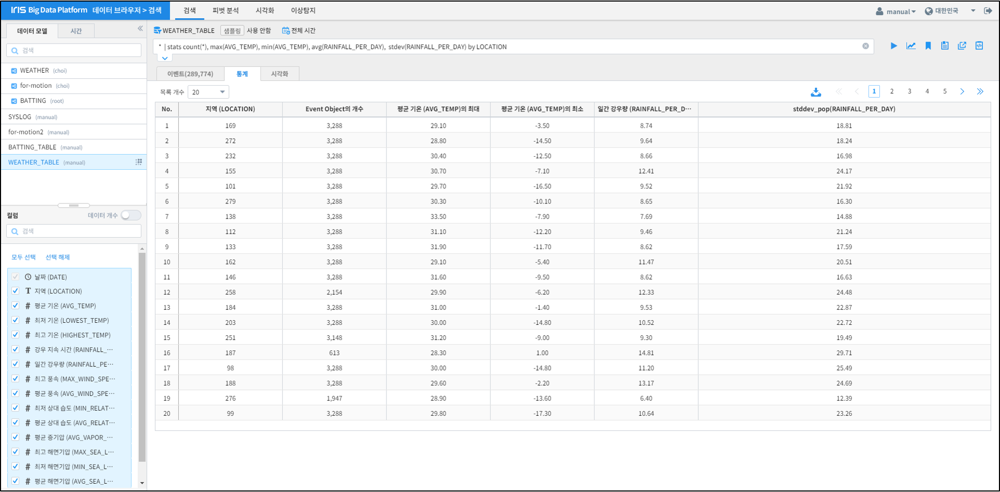
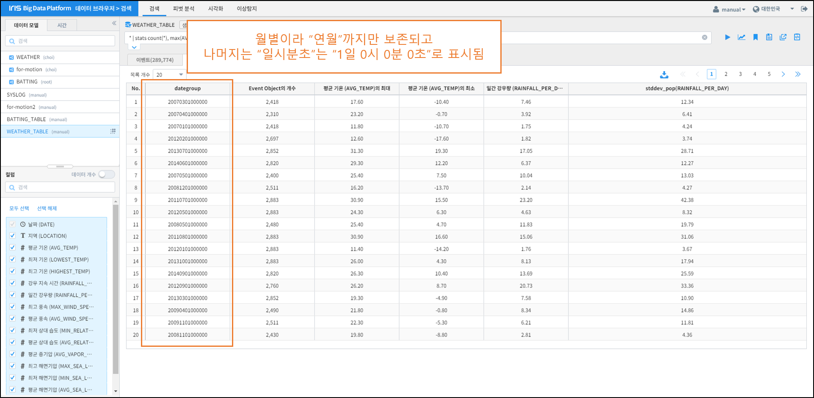
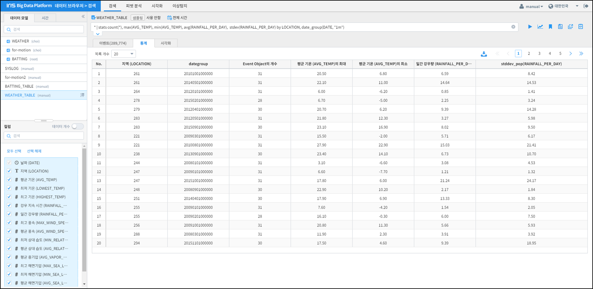
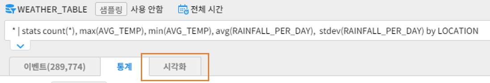
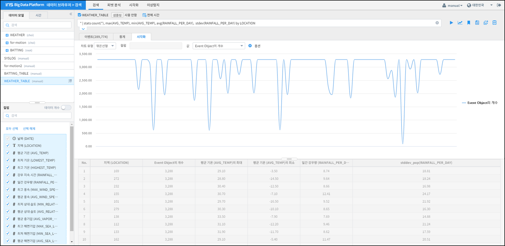

데이터의 기초 통계 분석¶
개요¶
IRIS [검색] 메뉴에서 지원하는 Command 중 “stats” 를 이용하여 데이터의 기초 통계 분석을 진행하는 방법을 기술합니다.
“stats” Command에서는 기초 통계 분석을 위해 다음 함수들을 지원하고 있습니다.
| 함수명 | 설명 | 비고 |
|---|---|---|
| sum( ) | 합계 산출 | |
| avg( ) | 평균 값 산출 | |
| count( ) | 개수 산출 | |
| distinct_count( ) | 유니크한 값의 개수를 산출 | |
| first( ) | 첫 번째 값 반환 | |
| last( ) | 마지막 값 반환 | |
| max( ) | 최댓값 반환 | |
| min( ) | 최솟값 반환 | |
| median( ) | 중간 값 반환 | |
| stdev( ) | 모집단의 표준편차 산출 | SQL의 STDEV와 동일 |
| stdevp( ) | 표본의 표준편차 산출 | SQL의 STDEVP와 동일 |
| var( ) | 분산 산출 | |
| iqr( ) | 사분위수 범위 산출 |
{kind=link}
기초 통계 산출¶
문자형 변수를 기준으로 산출¶
문자형 변수인 지역을 기준으로 데이터의 개수, 평균 기온의 최댓값과 최솟값, 일간 강우량의 평균값과 표준편차 값을 산출하겠습니다.
이 때 명령어는 다음과 같습니다.
* | stats count(*), max(AVG_TEMP), min(AVG_TEMP), avg(RAINFALL_PER_DAY), stdev(RAINFALL_PER_DAY) by LOCATION
입력 후 우측 [실행] 버튼을 누르면 아래와 같은 결과 화면이 도출됩니다.
{kind=link}
날짜형 변수를 기준으로 산출¶
만약 기준이 되는 변수가 날짜일 경우, “by” 뒤에 컬럼을 date_group 함수를 써서 명기해야 합니다.
예를 들어, 앞서 산출한 통계량을 월별로 산출하려면 명령어는 다음과 같습니다.
* | stats count(*), max(AVG_TEMP), min(AVG_TEMP), avg(RAINFALL_PER_DAY), stdev(RAINFALL_PER_DAY) by date_group(DATE, "1m")
입력 후 우측 [실행] 버튼을 누르면 아래와 같은 결과 화면이 도출됩니다.
{kind=link}
날짜형 변수를 처리하는 함수 “date_group”의 용법은 다음과 같습니다.
형식: date_group(컬럼명, 단위)
* 단위: "10y", "1y", "10m", "1m", "10d", "1d", "10H", "1H", "10M", "10M", "10S", "1S"
(y, m, d, H, M, S는 각각 연월일 시분초를 의미)
기준 변수가 2개 이상일 때¶
기준이 되는 변수가 2개 이상일 경우, “by” 뒤의 변수를 기준이 되는 순서대로 “,”로 구분하여 나열합니다.
예를 들어, 앞서 기술한 문자형 변수와 날짜형 변수의 예시를 하나로 합쳐서 보고자 한다면, 명령어는 다음과 같습니다.
* | stats count(*), max(AVG_TEMP), min(AVG_TEMP), avg(RAINFALL_PER_DAY), stdev(RAINFALL_PER_DAY) by LOCATION, date_group(DATE, "1m")
그리고 이 때의 결과는 아래와 같습니다.
{kind=link}
기초 통계량 시각화¶
“stats” Command로 데이터를 조회할 경우, 결과는 [통계] 탭에서 표출되며 동시에 [시각화] 탭이 활성화되는 것을 확인할 수 있습니다.
{kind=link}
[시각화] 탭을 클릭하면 아래와 같은 화면이 표출됩니다.
{kind=link}
해당 화면에서 “차트 유형” 과 “컬럼”, “값” 변수를 바꿔가며 “stats” Command로 산출된 기초 통계 결과에 관한 다양한 시각화를 진행할 수 있습니다.
주의사항¶
[Notice 01] 기초 통계 Command의 결측값(Null) 처리 방식
기초 통계를 산출할 때 사용되는 Command들은 산출 과정에서 결측값이 존재할 경우, 결측값이 존재하는 행(row)을 연산 과정에서 배제하고 진행합니다.
만약 기초 통계 산출에 활용될 컬럼에 결측값이 존재한다면, 반드시 사전에 전처리(pre-processing)를 수행한 후 연산을 진행하시기 바랍니다.